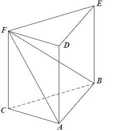
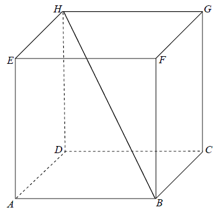

Różne zadania z graniastosłupów
Liczba wszystkich krawędzi graniastosłupa jest o \(10\) większa od liczby
wszystkich jego ścian bocznych. Stąd wynika, że podstawą tego graniastosłupa jest
A.czworokąt
B.pięciokąt
C.sześciokąt
D.dziesięciokąt
B
Objętość graniastosłupa prawidłowego trójkątnego o wysokości \(7\) jest równa
\(28\sqrt{3}\) . Długość krawędzi podstawy tego graniastosłupa jest równa
A.\( 2 \)
B.\( 4 \)
C.\( 8 \)
D.\( 16 \)
B
Graniastosłup ma \(15\) krawędzi. Ile wierzchołków ma ten graniastosłup?
A.\( 10 \)
B.\( 5 \)
C.\( 15 \)
D.\( 30 \)
A
Wysokość graniastosłupa prawidłowego czworokątnego jest równa \(6\), a kąt
nachylenia jego przekątnej do płaszczyzny podstawy jest równy \(60^\circ \). Długość tej przekątnej
jest równa
A.\(3\)
B.\(\sqrt{3}\)
C.\(2\sqrt{3}\)
D.\(4\sqrt{3}\)
D
W graniastosłupie prawidłowym trójkątnym wszystkie krawędzie są tej samej długości.
Suma długości wszystkich krawędzi jest równa \(90\). Wtedy pole powierzchni całkowitej tego
graniastosłupa jest równe
A.\( 300 \)
B.\( 300\sqrt{3} \)
C.\( 300+50\sqrt{3} \)
D.\( 300+25\sqrt{3} \)
C
Graniastosłup ma \(2n+6\) wierzchołków. Liczba wszystkich
krawędzi tego graniastosłupa jest równa
A.\( n+3 \)
B.\( 4n+8 \)
C.\( 6n+18 \)
D.\( 3n+9 \)
D
Dany jest graniastosłup prawidłowy trójkątny \(ABCDEF\) o podstawach \(ABC\) i
\(DEF\) i krawędziach bocznych \(AD\), \(BE\) i \(CF\). Oblicz pole trójkąta \(ABF\) wiedząc, że
\(|AB|=10\) i \(|CF|= 11\). Narysuj ten graniastosłup i zaznacz na nim
trójkąt \(ABF\).
\(P=70\)
Dany jest graniastosłup prawidłowy trójkątny \(ABCDEF\) o podstawach \(ABC\) i
\(DEF\) i krawędziach bocznych \(AD, BE\) i \(CF\) (zobacz rysunek). Długość krawędzi podstawy
\(AB\) jest równa \(8\), a pole trójkąta \(ABF\) jest równe \(52\). Oblicz objętość tego
graniastosłupa. 
\(V=176\sqrt{3}\)
W graniastosłupie prawidłowym czworokątnym \(ABCDEFGH\) przekątna \(AC\) podstawy
ma długość \(4\). Kąt \(ACE\) jest równy \(60^\circ\). Oblicz objętość ostrosłupa \(ABCDE\)
przedstawionego na poniższym rysunku. 
\(V=\frac{32\sqrt{3}}{3}\)
Przekątna graniastosłupa prawidłowego czworokątnego \(ABCDA_1B_1C_1D_1\) ma długość
\(2\sqrt{219}\), a krawędź podstawy - \(10\sqrt{2}\).  Wyznacz:
Wyznacz:
Wyznacz:- Wysokość graniastosłupa.
- Pole trójkąta \(EFG\), którego wierzchołkami są środki trzech krawędzi wychodzących z jednego wierzchołka podstawy.
\(H=2\sqrt{119}\), \(P_{\Delta EFG}=60\)
Liczba wszystkich krawędzi graniastosłupa jest równa \(24\). Wtedy liczba
wszystkich jego wierzchołków jest równa
A.\( 6 \)
B.\( 8 \)
C.\( 12 \)
D.\( 16 \)
D
W graniastosłupie prawidłowym czworokątnym wysokość graniastosłupa jest o \(4\)
krótsza od przekątnej podstawy i o \(8\) krótsza od przekątnej graniastosłupa. Oblicz sinus kąta
pomiędzy przekątną graniastosłupa a płaszczyzną podstawy.
\(\sin \alpha =\frac{3}{5}\)
W graniastosłupie prawidłowym czworokątnym \( ABCDEFGH \) połączono punkty będące
środkami krawędzi \( BC \), \( CD \), \( AD \) i \( GH \). Wyznacz objętość powstałej bryły wiedząc,
że \( \vert{DB}\vert=5\sqrt{2} \) i kąt \( DBH \) ma miarę \( 60^\circ \).
\(V=\frac{125\sqrt{6}}{12}\)
Graniastosłup ma \( 10 \) ścian. Liczba wszystkich krawędzi tego graniastosłupa
wynosi:
A.\(8 \)
B.\(16 \)
C.\(24 \)
D.\(32 \)
C
Podstawą graniastosłupa \(ABCDEFGH\) jest prostokąt \(ABCD\) (zobacz rysunek),
którego krótszy bok ma długość \(3\). Przekątna prostokąta \(ABCD\) tworzy z jego dłuższym bokiem
kąt \(30^\circ\). Przekątna \(HB\) graniastosłupa tworzy z płaszczyzną jego podstawy kąt
\(60^\circ\). Oblicz objętość tego graniastosłupa. 
\(V=162\)
Jacek bawi się sześciennymi klockami o krawędzi \(2\) cm. Zbudował z nich jeden
duży sześcian o krawędzi \(8\) cm i wykorzystał do tego wszystkie swoje klocki. Następnie zburzył
budowlę i ułożył z tych klocków drugą bryłę – graniastosłup prawidłowy czworokątny. Wtedy okazało
się, że został mu dokładnie jeden klocek, którego nie było gdzie dołożyć. Oblicz stosunek pola
powierzchni całkowitej pierwszej ułożonej bryły do pola powierzchni całkowitej drugiej bryły i wynik
podaj w postaci ułamka nieskracalnego.
\(\frac{16}{17}\)
Odcinek łączący środki dwóch skośnych krawędzi podstaw graniastosłupa prawidłowego
czworokątnego ma długość \(10\). Jaką wysokość powinien mieć ten graniastosłup, aby pole jego
powierzchni bocznej było maksymalne?
\(h=5\sqrt{2}\)
W graniastosłupie prawidłowym czworokątnym \(EFGHIJKL\) wierzchołki \(E, G, L\)
połączono odcinkami (tak jak na rysunku).  Wskaż kąt między wysokością \(OL\) trójkąta \(EGL\) i płaszczyzną podstawy tego
graniastosłupa.
Wskaż kąt między wysokością \(OL\) trójkąta \(EGL\) i płaszczyzną podstawy tego
graniastosłupa.
Wskaż kąt między wysokością \(OL\) trójkąta \(EGL\) i płaszczyzną podstawy tego
graniastosłupa. A.\( \sphericalangle OGL \)
B.\( \sphericalangle HOL \)
C.\( \sphericalangle HLO \)
D.\( \sphericalangle OHL \)
B
Każda krawędź graniastosłupa prawidłowego trójkątnego ma długość równą \(8\). Pole
powierzchni całkowitej tego graniastosłupa jest równe
A.\( 8^2\left ( \frac{\sqrt{3}}{2}+3 \right ) \)
B.\( \frac{8^2\sqrt{6}}{3} \)
C.\( 8^2\cdot \sqrt{3} \)
D.\( \frac{8^2}{3}\left ( \frac{\sqrt{3}}{2}+3 \right ) \)
A
Wysokość graniastosłupa prawidłowego czworokątnego jest równa \(16\). Przekątna
graniastosłupa jest nachylona do płaszczyzny podstawy pod kątem, którego cosinus jest równy
\(\frac{3}{5}\). Oblicz pole powierzchni całkowitej tego graniastosłupa.
\(P=144+384\sqrt{2}\)
Pole podstawy graniastosłupa prawidłowego czworokątnego jest równe \(36\), a miara
kąta nachylenia przekątnej graniastosłupa do płaszczyzny jego podstawy jest równa \(30^\circ\).
Wysokość tego graniastosłupa jest równa
A.\( 3\sqrt{2} \)
B.\( 6\sqrt{2} \)
C.\( 2\sqrt{6} \)
D.\( 3\sqrt{6} \)
C